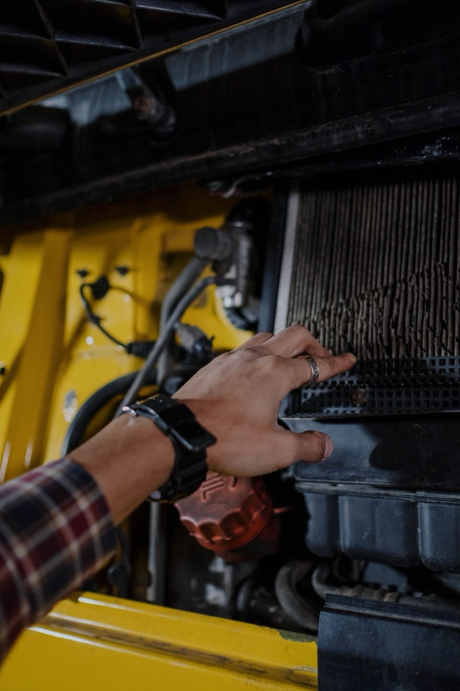
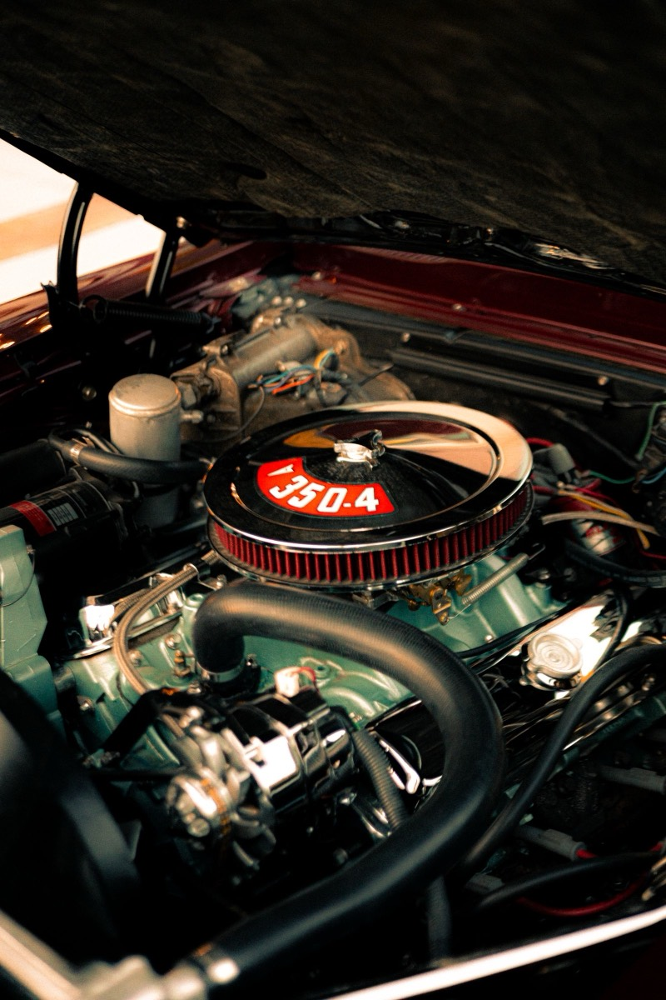

Cold Air Intake Sound: What Actually Changes, and Where You Hear It
The sound change from a cold air intake is real, and it is one of the few modifications where the butt-dyno and the microphone agree. What the microphone does not agree on is how much. Owners of the same part on similar trucks report everything from "20–30% increase in sound" to "you barely notice i
The change is real, and it arrives under load. An open filter is loud on a hard pull and close to stock at a steady cruise, because the factory’s sealed box, tuned inlet path and resonator were what kept it quiet at low airflow.
Every percentage quoted in these videos is an owner’s estimate. Not one source in this whole cluster put a sound level meter on the truck — so “20–30% louder” is a person’s impression, not a measurement.
The sound change from a cold air intake is real, and it is one of the few modifications where the butt-dyno and the microphone agree. What the microphone does not agree on is how much. Owners of the same part on similar trucks report everything from “20–30% increase in sound” to “you barely notice it,” and both of those are honest reports from people who did the swap themselves.
The reason they differ is that almost nobody is describing the same thing. Some are describing a cold start in a garage, some a wide-open pull onto a highway, some a steady cruise — and the intake only talks during one of those.
What the factory air box was doing acoustically
A stock intake is not a pipe with a filter on the end. It is a sealed enclosure of a carefully chosen volume, with an inlet path routed to draw air from outside the engine bay, and — on most modern vehicles — a resonator tuned to cancel a specific narrow band of intake noise. Every one of those parts does an acoustic job as well as a breathing job.
An open cone filter deletes all of it. The filter is no longer inside a box that contains its noise, and the intake tract is no longer routed through a tuned path. What you hear afterwards is the turbo or the throttle body and the air itself, directly.
That is not a side effect. It is the mechanism, and it explains the pattern owners report: the change is loudest under load and at high airflow, and near zero at cruise. A 2015 Ram 1500 owner with a K&N 63 Series put it precisely — he estimated “a 20–30% increase in sound” and added that “the intake goes unnoticed at low RPM, light throttle response.” Those two statements are not in conflict. They are the signature of an open filter.

What the before/after clips actually capture
The before-and-after genre on YouTube is large and mostly unhelpful, because the two halves are recorded differently. Here is what the popular ones actually do.
The Silverado sound-only clip is the most methodical of the group. It is a K&N on a 2016 Chevy Silverado 5.3L, and the title says “Sound Only” because that is the whole video — no install, no driving shots, just matched clips: an exhaust cold start revving to about 3,000 rpm, a 0–45 mph acceleration in-cabin, and the same again after the swap. Matched clips with the same microphone in the same cabin are the only way a before/after video tells you anything true.
The Ram 1500 clip is the most self-aware. Its author opens by saying the video “does not truly capture the deeper undertones with the intake put on,” then gives the 20–30% estimate anyway, and labels it as an estimate. That is the right way to handle a phone microphone.
The Trail Boss video is the most popular and the least rigorous about sound — it is an install video that happens to end in a rev, and its description leads with a horsepower claim from the manufacturer rather than with the noise.
What none of them do is measure. There is no clip in this set with a sound level meter in frame, which means every percentage figure attached to intake sound is a subjective estimate, not a measurement. Including the ones in this article, which come from owners, not from us.

Why the same part sounds different on two trucks
Four variables decide whether your truck gets the dramatic version or the shrug.
Turbo or naturally aspirated. A turbocharged engine pushes pressurized air through the intake tract, and an open filter releases the compressor’s noise — the spool and the flutter. A naturally aspirated V8 releases induction roar instead, which is a lower, broader sound that the factory box was very good at containing. The same filter element produces two entirely different results depending on which engine it sits on.
Where the filter sits. An open element in the engine bay draws hot air and radiates noise in every direction. A sealed or closed-box intake keeps the factory’s acoustic enclosure and loses much of the sound — which is exactly why closed-box systems are sold on airflow and filtration rather than on noise.
Cabin insulation. A truck with a quiet cabin makes an intake more noticeable by contrast. A truck that is already loud makes it disappear.
Where the microphone is. A phone in a cupholder hears a different truck from a phone taped to the steering column. This is the single biggest reason two clips of the same mod sound unrelated.
What it costs, verified
Prices and review counts below were read from live AmericanTrucks listings for the 2019–2026 Silverado 1500 on 16 November 2026.
Open element, $189.99. The RedRock Cold Air Intake in polished finish covers the 2019–2026 5.3L and 6.2L and carries 500+ reviews at $189.99. An open cone is the loudest option per dollar and the one that will change the sound most — which is not the same as changing the power most.
RedRock Cold Air Intake → $189.99 · 500+ reviews · checked 16 Nov 2026
Closed box, $475.99. The Corsa Performance Closed Box with a Donaldson PowerCore dry filter fits the 2019–2026 5.3L and carries 160 reviews at $475.99. It keeps a sealed housing around the filter, which is the arrangement that costs you the induction noise.
Corsa Closed Box Intake → $475.99 · 160 reviews · checked 16 Nov 2026
For the 2.7L and the 3.0L Duramax, the aFe Momentum GT is $435.00 with 275 reviews on the 2019–2026 2.7L, and the aFe Momentum HD runs $420.00 with the oiled Pro 10R filter (12 reviews) or $435.00 with the dry Pro DRY S (23 reviews) on the 2020–2026 3.0L Duramax.
The full price ladder from a $55 drop-in panel filter up to closed-box systems, plus the MAF and heat-soak problems that matter more than the noise, is in the intake and engine guides.
The California answer, which is not a sound question
Under the standing rule for this site: if an intake has no CARB Executive Order number, it is not legal for sale or use in California, and it will fail the smog visual inspection. The inspector is looking for an EO plate under the hood, and a truck can pass the tailpipe test and still fail on that plate.
On those same listings, the disclosure is present but not prominent. The RedRock page states the part is “not currently CARB compliant” — in the Q&A block at the bottom. The AIRAID page states “Does Not Have a CARB EO Number” — as a bullet in the features list. Both are disclosures. Neither is where a buyer looking at a price and a photo will read it.
There is no sound-based exemption here. A louder intake is not a legal intake.
Do you actually get more power with the noise?
That is the part to be careful about, and it is the part the marketing leans on hardest. The Trail Boss video’s own description repeats a manufacturer claim of “+14HP” for its Cold Air Inductions Elite Series on a 2019–2020 Silverado. That is the brand’s number, published by the brand, and repeated by a video sponsored by the brand. It is attributed here as such, not repeated as a finding.
The honest framing is the one the sound itself supports: the intake changes what you hear far more reliably than it changes what you feel. A closed-box system with a dry filter is bought for filtration and consistency; an open cone is bought for the noise. Those are legitimate reasons. Neither of them is a horsepower claim.
Which to buy, and how to know
If you want the sound: buy an open element, and accept that the audible difference arrives under load, not at cruise. The $189.99 RedRock is the highest-volume version of that on this catalog.
If you want the airflow and not the noise: a closed box keeps the factory’s acoustic behaviour. The Corsa at $475.99 is the version with enough owner feedback to argue from.
If you are in California: neither, unless you have found the EO number for the specific part number first. Search CARB’s own Executive Order database with the part number, not the product name.
If you want a cheaper experiment first: a drop-in panel filter changes nothing acoustically and costs far less. It is the right first purchase if the sound is not actually the point.
Frequently asked questions
How much louder is a cold air intake?
Owners report anywhere from a 20–30% increase to almost nothing. No published test in this set used a sound level meter, so those figures are estimates. The reliable pattern is that the change is large under hard throttle and close to zero at a steady cruise.
Why is it loud at full throttle but not at cruise?
An open filter releases intake noise in proportion to airflow. At cruise the engine is moving little air and the factory resonator’s job — a narrow band around a typical cruising flow — is no longer being done by anything, so the noise floor barely changes.
Does a cold air intake make the exhaust louder?
No, but it changes what you hear from the driver’s seat during acceleration. The Silverado clip above describes a “throatier growl” from an intake swap alone, which is induction noise arriving through the same cabin.
Will it drone on the highway?
Usually not, because the volume rise happens under load. A drone that is constant at cruise is more often an exhaust problem.
Do I need a tune after fitting one?
Not for the sound. Whether you need one for the fuelling depends on the MAF housing the intake uses, which is covered in the engine and intake guides.
Is a louder intake legal in California?
The noise is not the question. The CARB Executive Order is. Without an EO number the part is not legal in California regardless of how it sounds.
CarModReview may earn a commission from purchases made through links on this page, at no extra cost to you.
Sources
View counts, titles, channel names, upload dates and descriptions read from the videos themselves on 16 November 2026:
- Optimized DIY, “K&N Cold Air Intake Before & After (Sound Only) - Silverado 5.3 L - Exhaust Cold Start & Acceleration”, youtube.com/watch?v=5GEis_ysEbg — 59,855 views. 2016 Chevy Silverado 5.3L; clips listed as an exhaust cold start rev to about 3,000 rpm, a 0–45 mph in-cabin acceleration, and the same after fitting a K&N.
- John W, “Before and After Cold Air Intake - 2015 Ram 1500”, youtube.com/watch?v=HDZhielFzhk — 47,246 views. 2015 Ram 1500 Sport with the Hemi and a K&N 63 Series; the owner’s own description says the video “does not truly capture the deeper undertones,” estimates “approximately 20-30% increase in sound,” and notes the intake “goes unnoticed at low RPM/light throttle response.”
- One Minute Mechanic, “2013 F150 fx4 K&N Cold Air Intake(sound before/after)”, youtube.com/watch?v=vYBUetWRW0s — 96,465 views, published 1 April 2018; description states the K&N was bought from a local AutoZone for “$300.”
- LONESTAR HAWAIIAN, “ADDING POWER to the 2020 Silverado Trail Boss! Sounds INCREDIBLE - Cold Air Inductions”, youtube.com/watch?v=J05bzfs2yTE — 246,447 views; description repeats the manufacturer claim of “+14HP” for the Cold Air Inductions Elite Series on 2019–2020 Silverado. Attributed to the brand, not independently verified here.
Prices, review counts and fitment read from the live AmericanTrucks 2019–2026 Silverado 1500 intake listings on 16 November 2026. CARB language on the RedRock and AIRAID listings was read on 12 November 2026 and recorded in the California intake guide.
CARB’s own process, including the Executive Order search and the helpline mailbox, is described on ww2.arb.ca.gov/executive-orders-certifications-verifications, read on 16 November 2026.
Topics
- Engine & Intake
- Corsa
- RedRock
- Silverado 1500
- Duramax
- 5.3L
- 6.2L
- 2.7L